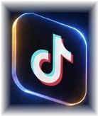
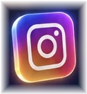

Trava quando grava
A câmera liga e o que você diria numa conversa simplesmente some.


Aprenda a se comunicar diante da câmera para vender, divulgar seu trabalho, criar conteúdo ou atuar como afiliado.
Mesmo que hoje você trave, degrau a degrau você chega a gravar com naturalidade e a se comunicar do jeito que sempre quis.
R$ 197 · compra única · sem mensalidade
7 módulos · 32 aulas · X horas de formação
A câmera liga e o que você diria numa conversa simplesmente some.
Assiste ao que gravou e só vê defeito, mesmo falando bem ao vivo.
Revê o próprio vídeo depois e pensa que não leva jeito pra isso.
Nunca teve prática de falar sozinho pra uma lente e não sabe nem o primeiro passo.
Quando aparecer em vídeo faz parte do que você quer construir na internet, essa dificuldade começa a limitar aquilo que você consegue mostrar, ensinar, divulgar ou vender.
No Do Medo ao Play, teoria, técnica e prática andam juntas. Em cada módulo você aprende uma parte da sua comunicação e já leva isso para a câmera, em uma gravação nova e um pouco mais exposta que a anterior: começa gravando só para você e termina publicando para todo mundo.

Grava e guarda só para você. Ninguém mais vê ainda. É o seu "antes".

Grava um vídeo novo e manda para 1 pessoa de confiança.

Grava um vídeo novo e manda para 2 ou 3 pessoas de confiança.

Grava um vídeo novo e compartilha num grupo fechado que já participa, no WhatsApp ou Telegram.

Compartilha com uma lista maior que você mesma monta: close friends do Instagram ou lista de transmissão do WhatsApp.

Story aberto ou para os seus seguidores atuais, preparando o terreno para o geral.

Grava o vídeo final, o seu "depois", e compartilha geral, valendo para qualquer rede. Essa é a sua versão que aparece.
Um nível de cada vez. Até dar o play.
Quero entrar em cenaMostrar um produto, explicar um serviço, compartilhar conhecimento, criar conteúdo, construir autoridade ou trabalhar como afiliado depende, muitas vezes, da sua capacidade de se comunicar diante da câmera. Quando você desenvolve essa habilidade, fica mais preparado para apresentar o que faz, defender suas ideias, ser entendido e aproveitar oportunidades que dependem da sua presença.
Comunicação não substitui estratégia, oferta ou conteúdo, mas coloca você em melhores condições de usar tudo isso quando o vídeo faz parte do caminho.
Resultado ou mudança concreta percebida ao longo do curso
Resultado ou mudança concreta percebida ao longo do curso
Resultado ou mudança concreta percebida ao longo do curso

Vitória Caroline criadora do método Do Medo ao Play
Vitória Caroline ensina há 13 anos, entre aulas individuais, projetos educacionais e formação profissional. Ao longo desse caminho, criou materiais didáticos autorais, formou turmas e acompanhou alunos desenvolverem habilidades a ponto de alcançarem níveis de execução muito além de onde começaram e transformarem o aprendizado em novas oportunidades.
Há 8 anos produz conteúdo profissionalmente para a internet, passando por diferentes formatos, parcerias e trabalhos para marcas. Nos últimos 4 anos, especializou-se em comunicação e oratória. Hoje, sua forma de se comunicar é uma das competências pelas quais mais é reconhecida e já foi determinante para convites, trabalhos e para a própria criação do Do Medo ao Play.
Sua experiência como educadora sustenta a lógica do método: habilidade não se constrói só entendendo a teoria. Ela se desenvolve quando conhecimento, técnica, prática e exposição avançam juntos.
A formação acompanha a progressão da Escada de Exposição. Em cada etapa, você desenvolve uma parte da comunicação e leva aquilo para a câmera.
7 módulos, 32 aulas e X horas de formação para desenvolver diferentes aspectos da sua comunicação diante da câmera.
Teoria, técnica e prática avançam juntas durante a formação, com novas gravações e aumento gradual do nível de exposição.
Grupo exclusivo no Telegram para alunos, com espaço para tirar dúvidas relacionadas às aulas e acompanhar o processo.
Ao concluir a formação, você recebe o certificado do Do Medo ao Play.
+ 2 bônus
Um assistente disponível a qualquer hora que você precisar. Envia uma foto do seu setup e recebe orientações sobre áudio, iluminação, altura e apoio da câmera; usa a ferramenta pra escolher o assunto e receber palavras-chave; manda o que vai falar pra revisão antes de gravar; treina voz e dicção na hora; e tira qualquer dúvida de técnica quando precisar.
Um guia organizado em três faixas (iniciante, intermediária e avançada) para entender quais equipamentos fazem sentido em cada momento, sem partir da ideia de que é necessário montar um estúdio para começar.
O material também reúne referências extras para quem quiser aprofundar alguns dos temas apresentados no curso.
DO MEDO AO PLAY
Ao entrar no Do Medo ao Play, você recebe a formação completa com 7 módulos, 32 aulas e X horas de formação, participa da Escada de Exposição, tem acesso ao grupo exclusivo de acompanhamento no Telegram, recebe certificado ao concluir o curso e leva também os dois bônus da formação.
7 módulos · 32 aulas · X horas de formação · acompanhamento · 2 bônus · certificado
Quero entrar em cenaCompra 100% online processada pela Hotmart.
Se durante esse período você decidir que a formação não faz sentido para você, pode solicitar o reembolso pela Hotmart.
Sim. A Escada de Exposição começa no primeiro nível e avança gradualmente. Você não precisa chegar ao curso sabendo gravar ou dominar técnicas de comunicação diante da câmera.
Sim. O curso trabalha diferentes aspectos da comunicação diante da câmera, como estrutura da fala, voz, dicção, corpo e expressão. Você pode entrar já tendo alguma experiência e desenvolver os pontos que ainda interferem nas suas gravações.
Não. Você pode começar com o celular que já tem. O foco principal do curso é a sua comunicação. O bônus de equipamentos existe para orientar quem quiser melhorar o setup ao longo do tempo sem comprar coisas desnecessárias.
[Inserir aqui a regra real do curso sobre compartilhamento das gravações.]
Depois da aprovação do pagamento, você recebe as informações de acesso à formação pela plataforma.
[Inserir aqui o período real de acesso definido para o produto.]
Sim. As aulas são gravadas e você pode avançar de acordo com a sua rotina, respeitando o período de acesso definido para a formação.
Os alunos têm acesso ao grupo exclusivo no Telegram para tirar dúvidas relacionadas às aulas e acompanhar o processo durante a formação.
Sim. Ao concluir a formação, você recebe o certificado do Do Medo ao Play.
O curso utiliza técnicas de comunicação e oratória aplicadas especificamente à gravação de vídeos para a internet. O foco não é preparar discursos formais, apresentações de palco ou entrevistas de emprego.
Não. Você pode estar começando agora. A habilidade de se comunicar diante da câmera pode ser usada por quem vende produtos, presta serviços, cria conteúdo, trabalha como afiliado ou precisa começar a aparecer profissionalmente na internet.
DO MEDO AO PLAY
Talvez hoje exista uma distância entre a forma como você se comunica normalmente e aquilo que consegue mostrar quando a câmera liga. O Do Medo ao Play foi criado para trabalhar justamente esse espaço, usando técnica, prática e uma progressão que começa no nível em que você está agora.
A primeira gravação não precisa parecer com a última. É para isso que existe a Escada de Exposição.
Atravesse o medo. Apareça.
Quero entrar em cenaR$ 197 · compra única · sem mensalidade